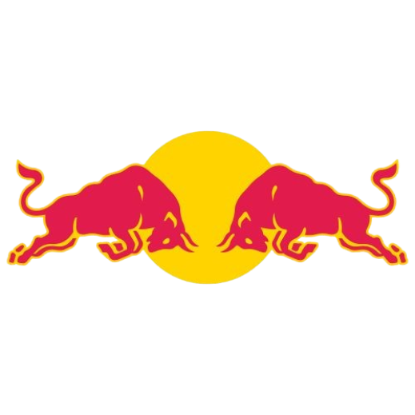
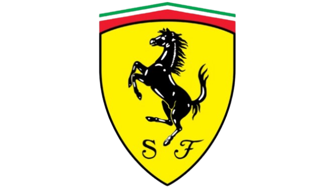

| Classificação Final | |
|---|---|
| 1º Lando Norris | 25 pontos |
| 2º Max Verstappen | 18 pontos |
| 3º George Russell | 15 pontos |
| 4º Kimi Antonelli | 12 pontos |
| 5º Alexander Albon | 10 pontos |
| 6º Lance Stroll | 8 pontos |
| 7º Nico Hulkenberg | 6 pontos |
| 8º Charles Leclerc | 4 pontos |
| 9º Oscar Piastri | 2 pontos |
| 10° Lewis Hamilton | 1 ponto |
| Classificação Final Construtores | |
|---|---|
1º Mclaren  |
27 pontos |
| 2º Mercedes | 27 pontos |
| 3º Redbull  | 18 pontos |
| 4º Willams | 10 pontos |
| 5º Aston Martin | 8 pontos |
| 6º Kick Sauber | 6 pontos |
| 7º Ferrari  | 5 pontos |
| 8º Alpine | 0 pontos |
| 9º Racing Bull | 0 pontos |
10° Haas  |
0 pontos |